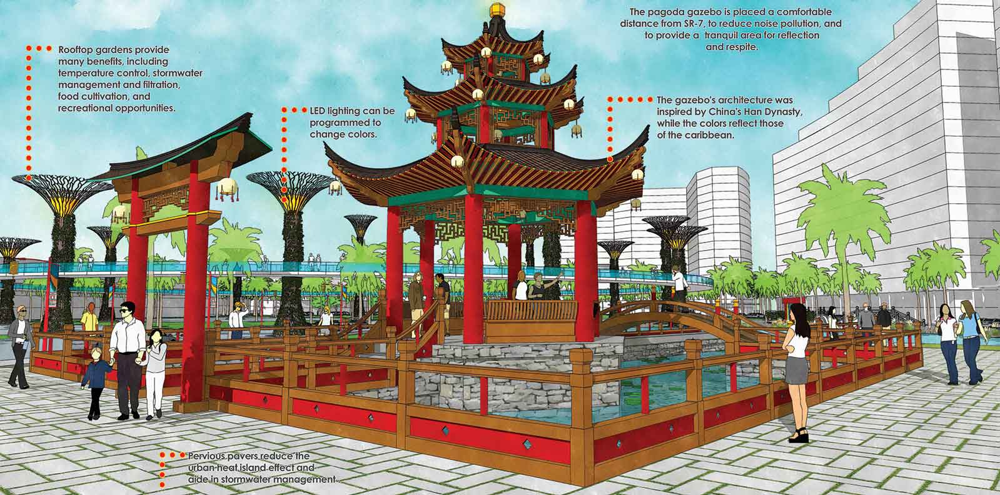

In 2016, the city of North Miami approved a resolution of building a Chinatown comprised of a 16-block commercial zoned land along Northwest Seventh Avenue. The initial plan was to increase the local exposure for tourism and international attention. However, without any official progress updates being announced, it has been six years since the resolution was first approved.
Proposed corridor for North Miami's Chinatown Cultural Arts & Innovation District
Credit to North Miami
Years in the making, the plan that intended to construct a Chinatown in a county where less than one percent of the population is of Chinese descent, has been a controversial matter in North Miami, especially after the outbreak of coronavirus at the beginning of 2020 in China.
The coronavirus not only knocked down Chinese business across the United States but intensified the domestic xenophobia and resulted in a unparallel level of anti-Asian hate violence. For a time, Chinese-related culture was considered as a cyber plague throughout the country.
Besides the rising concern on the global health crisis, the Chinatown plan was opposed by some of North Miami residents who argued that local black business could also suffer if the plan was implemented.
However, two years after the pandemic, people are still wondering if the Chinatown plan is still viable while everything seems to return to a new normal.
Image by North Miami
Alix Desulme, the current Vice Mayor of the City of North Miami, who has been spearheading the Chinatown project, said the project instead of being permanently terminated, was just paused for a while due to the pandemic.
Joshua Ho, the Program Director of Miami-Dade Asian-American Advisory board, said he had been aware of this Chinatown plan as well. “As a board, we offer supports when the community wants to get things done. However, as the pandemic came, the plan became kind of quiet.”
“The plan in terms of redeveloping the Seventh Avenue Corridor is still in progress but the name will be slightly changed. We haven't come up with a new name for the current Chinatown yet,” Desulme said.
Desulme said COVID was only part of the reasons why there was a freeze on the Chinatown project. During the past few years, the city had been suggested to rebrand the district by their business partners in China for different investment reasons. “Our previous administration's relationship with China also played a role,” Desulme said.
Desulme has been working on this project for at least four years since he first got elected to the North Miami Council.
“I had gone to different communities and I saw there was a Chinatown vibe with a vibrant community and cultures,” Desulme said. “Although we did not have a big Chinese population in South Florida, however, FIU has a relationship in China and they also had a very nice population of Chinese students.” FIU, an acronym for Florida International University located in Miami-Dade County. “They kind of helped me lead the effort to put this idea together into fruition,” Desulme said.
Desulme FIU had always been an integral partner because they helped arrange the first Business Development Mission Trip to China in 2016. “Their architecture students also helped us design the concept of the actual plan for Chinatown, which was just approved last year,” Desulme said.
Chinatown could have brought in a great economic flux. However, depending on the current relations between China and U.S., “Some of the investors we had in China said they wouldn't be able to move forward with a lot of investment for now, so we have been suggested to keep the plan but change the name to something that wouldn't cause the project uninstalled,” Desulme said.
“It is always a mixture of Asian and Caribbean cultures,” Desulme said. The City of North Miami were just observing and trying to figure out which name was going to best work for the corridor.
“We just finished the road diet and the next phase the city will be doing is to plant more palm trees to beautify the area. Then we will start to do the business attraction,” Desulme said.